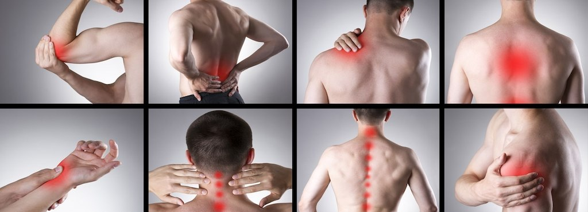
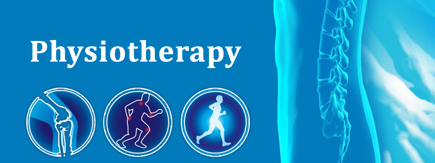

Physiotherapy
Introduction
Physiotherapy is a health profession concerned with helping to restore well-being to people following injury, pain or disability.
We at Mercy Heathcare mainly use physical approaches to promote, maintain and restore physical, psychological and social well-being, taking account of variations in health status.
Using knowledge from our extensive scientific background of human anatomy and physiology, our Physiotherapists help to assess, diagnose and treat conditions and illnesses that affect people in all ages and social groups, assist in injury prevention and promote healthier lifestyles for all.
The department provides both an inpatient and outpatient service to patients referred by their Consultant teams. Services are divided into a number of areas of specialization each headed by a Senior Physiotherapist.
Services Available
Neurological physiotherapy and Rehabilitation
- Exercise Transverse Myelitis patient
- Gait Training Exercise Transverse Myelitis patient
- Wheel Chair activity Spinal cord Injury Patients
- Wheel Chair activity Spinal cord Injury Patients
- Standing with HKFO Spinal Injury Patient from Nigeria
- Standing with HKFO Spinal Injury Patient from Nigeria
- Bio-feedback upper limb training of Stroke patient
- Bio-feedback upper limb training of Stroke patient
Our physiotherapy department is fully equipped for the treatment of individuals who have neurological impairments; for example Traumatic Brain Injury, Stroke (CVA) Multiple Sclerosis, Transverse myelitis, G.B Syndrome, Spinal Cord Injury and Parkinson's disease. As Neuro-Physiotherapists we are specialized in assessing and treating individuals with such neurological impairments to enhance or maximize their functional ability.
- Musculo-Skeletal Physiotherapy and Rehabilitation
- Manual Therapy Treatment of Low back Pain
- Manual Therapy Treatment of Low back Pain
- Manual Therapy Treatment of Frozen Shoulder
- Manual Therapy Treatment of Frozen Shoulder
- Core Stabilization Exercise for Spinal Problems
- Core Stabilization Exercise for Spinal Problems
- Manual Exercise of upper extremity
- Manual Exercise of upper extremity
We have expertise in the treatment of musculoskeletal (muscle and joint) conditions. Musculoskeletal Physiotherapy employs advanced clinical assessment and diagnosis methods.
We are the leaders in the diagnosis, treatment and prevention of muscle and joint problems, like lower back pain and neck pain, Knee pain, Shoulder pain and others bone and joints pain.
Cardio-Pulmonary Physiotherapy Rehabilitation
Cardio-Pulmonary Physiotherapy RehabilitationCardio-Pulmonary Physiotherapy RehabilitationCardio-Pulmonary Physiotherapy Rehabilitation
Chest physiotherapy with Mechanical Vibrator, Manual percussion, and early mobilization in I.C.U
Our Physiotherapists are skilled in helping patients who are coping with acute or chronic respiratory or cardiovascular conditions like ARDS, Post Cardiac and Pulmonary surgery by improving the function and capacity of their cardiorespiratory system. Our respiratory physiotherapist provides best treatment to the patients in performing specific breathing and secretion clearance techniques, resistance training, endurance exercises and a specific exercise prescription - all of these can help the patients feel better and get more out of life.
Pediatric Physiotherapy and Rehabilitation
Pediatric Physiotherapy and RehabilitationPediatric Physiotherapy and RehabilitationPediatric Physiotherapy and Rehabilitation
State-of-the-art center for early intervention of childhood diseases, like cerebral palsy, and delayed millstones
Our pediatric physiotherapists are more experienced and well trained to treat a wide variety of childhood diseases like Cerebral Palsy, Delayed milestones, Muscular dystrophies, and so many other diseases, with a focus on improving function and increasing independence. Physiotherapy has a positive and significant impact on pulmonary function, motor control, muscle strength, and physical endurance in pediatric patient. Physiotherapy interventions focus on movement and improvements in function to increase both the child's and family's quality of life. Improved function and involvement in daily activities provides more opportunity for social engagement.
- Sports Injury Physiotherapy and Rehabilitation
- Spinal Exercise on vestibular Ball
- Spinal Exercise on vestibular Ball
- PNf Stretching for hamstring flexibility
- PNf Stretching for hamstring flexibility
- LASER Therapy Treatment
- LASER Therapy Treatment
There are many sports injuries commonly treated in our physiotherapy department, such as Tennis Elbow, Ankle Sprain, rotator cuff injury and so many others muscular, and ligaments injury. Our physiotherapy department is fully equipped with latest technology like LASER therapy, IFT, TENS Combination therapy and long wave diathermy, etc.
Our physiotherapist use evidence based exercise protocol for speedy recovery of sports injury patients.
Geriatric Physiotherapy and Rehabilitation
Recumbent Bike with Back support
Recumbent Bike with Back support
Vestibular Exercise's
Vestibular Exercise's
Hand Activity exercises
Hand Activity exercises
Tilt Table standing
Tilt Table standing
The elderly have diseases and disorders in greater numbers than any other age group; their care is difficult, but rewarding. In JGH Physiotherapy & Rehabilitation Services' Geriatric rehabilitation programme focuses on the concerns the physical disabilities of the senior citizens. The process of ageing is often complicated by several physical conditions and disorders like arthritis, osteoporosis, cancer, Alzheimer's disease, hip and joint replacement, balance disorders, incontinence and so on. The programme helps those affected by such problems and many others which may be directly or indirectly related to old age. We have developed a specialized programme to help restore mobility, reduce pain, and increase fitness levels of the patients who, like all of us, deserve a dignified and independent life.
Women Health and Antenatal, Post Natal Physiotherapy
Incontinences Exercises
Incontinences Exercises
Pelvic muscle strengthening Exercises
Pelvic muscle strengthening Exercises
Core Muscle strengthening Exercises
Core Muscle strengthening Exercises
Our Women's Health Physiotherapy practice is holistic. It is not just about teaching pelvic floor muscle exercises, although this is obviously an important element, our treatment is tailored to help reduce any pain or embarrassment patients may be experiencing, whilst at the same time restoring and/or improving function (be it bladder, bowels or mobility). Women's health physiotherapy involves a broad range of treatment and advice, for example on bladder and bowel habits, diet, fluid intake, exercise and lifestyle.
Office ergonomic and Preventive Physiotherapy
Office ergonomic and Preventive Physiotherapy
The Centre regularly organizes corporate training program on OfficeErgonomic for prevention of wrong posture and repetitive strain injury (RSI).We also organize community health camps in association with neighboring RWAs and government offices.

